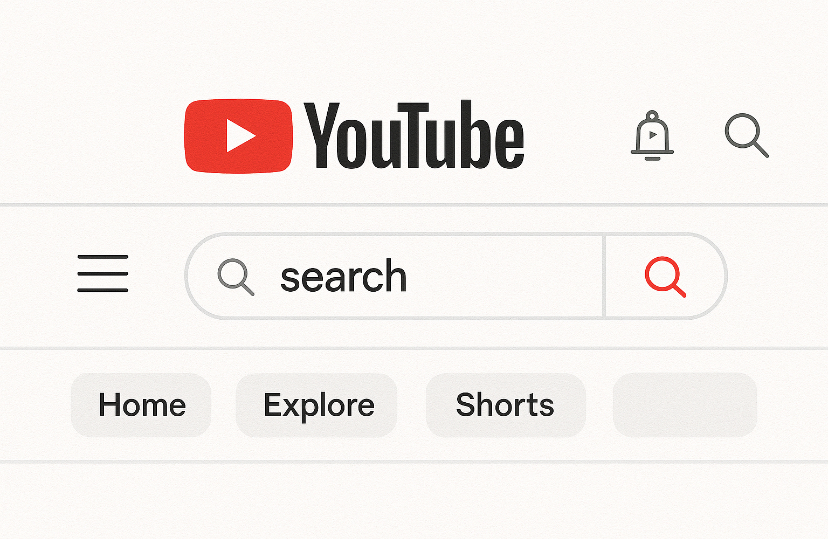
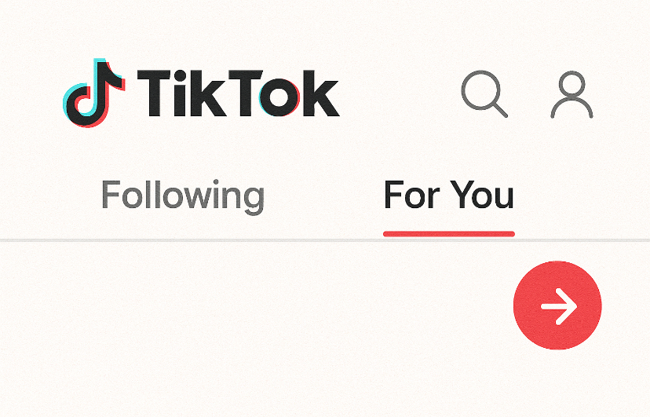
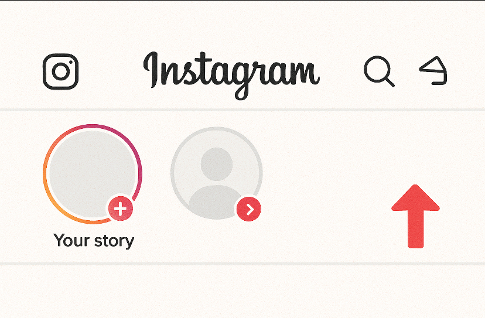

YouTube
1. Acessando o YouTube
- • Aplicativo ou Site: Você pode acessar o YouTube através do site (youtube.com) em um computador ou pelo aplicativo no celular (disponível na Play Store para Android ou na App Store para IPhone).
- • Login: Para uma experiência completa, é recomendável fazer login com sua conta do Google. Isso permite salvar vídeos em suas playlists, curtir, comentar e assinar canais.
2. Interface Inicial
- • Página Inicial: Ao abrir o YouTube, você verá a página inicial com vídeos recomendados, baseados em seus interesses, histórico de visualizações e inscrições.
- • Barra de Pesquisa: No topo da tela, há uma barra de pesquisa para encontrar vídeos, canais ou playlists. Basta digitar palavras-chave relacionadas ao que você deseja assistir.
- • Menu de Navegação: Abaixo da barra de pesquisa, você encontra várias abas:
- • Início: Vídeos recomendados.
- • Tendências: Vídeos populares e em alta.
- • Inscrições: Vídeos dos canais que você segue.
- • Biblioteca: Acesso aos vídeos assistidos, listas de reprodução e vídeos salvos.
3. Assistindo Vídeos
- • Selecionar e Assistir: Toque ou clique sobre um vídeo para assisti-lo. O vídeo começará a ser reproduzido automaticamente.
- • Controles de Vídeo: Durante a reprodução, você pode pausar, ajustar o volume, e mudar a qualidade do vídeo (em "Configurações", ícone de engrenagem).
- • Tela Cheia: Você pode clicar no ícone de "Tela Cheia" no canto inferior direito para expandir o vídeo para o modo full screen.
- • Legenda: Muitos vídeos têm legendas, que podem ser ativadas clicando no ícone de CC (Closed Captions) se disponíveis.
4. Interação com o Vídeo
- • Curtir/Descurtir: Abaixo do vídeo, você pode curtir ou descurtir o conteúdo clicando nos ícones de polegares para cima ou para baixo.
- • Comentar: Abaixo do vídeo, você pode comentar sobre o vídeo. Isso permite interagir com o criador de conteúdo e outros espectadores.
- • Compartilhar: Você pode compartilhar o vídeo em outras plataformas sociais ou copiar o link para enviar diretamente a outras pessoas.
- • Salvar: Se gostar de um vídeo, pode salvá-lo para assisti-lo mais tarde, clicando no ícone de "Adicionar à lista de reprodução".
5. Inscrever-se em Canais
- • Canais: No YouTube, os criadores de conteúdo têm canais. Você pode inscrever-se em um canal para receber notificações sempre que esse canal postar novos vídeos.
- • Ícone de Sino: Ao se inscrever, um ícone de sino aparece ao lado do botão de inscrição. Você pode ativá-lo para receber notificações de novos vídeos ou apenas para vídeos importantes.
6. Playlists
- • Criar Playlists: Você pode criar playlists para organizar seus vídeos favoritos. Para isso, basta clicar em "Adicionar a" abaixo de um vídeo e escolher ou criar uma nova playlist.
- • Playlists Públicas/Privadas: Você pode definir se as playlists serão públicas, privadas ou não listadas.
7. Configurações
- • Configurações de Conta: Clique no ícone do seu perfil (no canto superior direito) para acessar configurações como dados da conta, histórico, e configurações de privacidade.
- • Configurações de Notificação: Personalize quais notificações deseja receber sobre vídeos novos, canais ou respostas a comentários.
8. Assistir Offline
- • Modo Offline (YouTube Premium): Com uma assinatura do YouTube Premium, você pode baixar vídeos para assistir sem conexão à internet.
9. YouTube Kids
- • O YouTube Kids é uma versão do YouTube com conteúdo filtrado para crianças. Ele oferece uma experiência mais segura e amigável para os mais jovens.

TikTok
1. Criar uma Conta
- • Baixe o aplicativo TikTok na loja de apps do seu dispositivo (Google Play ou App Store).
- • Abra o app e crie uma conta usando seu e-mail, número de telefone ou conectando-se via uma conta de redes sociais como Facebook, Google, etc.
2. Explorar a Página Inicial
- • A página inicial possui duas abas:
- ◦ Para Você: Vídeos recomendados com base em suas interações.
- ◦ Seguindo: Vídeos das pessoas que você segue.
3. Interagir com Vídeos
- • Curtir, comentar, compartilhar e favoritar vídeos para ver depois.
4. Procurar Conteúdo
- • Use a lupa no canto inferior para pesquisar por vídeos, usuários ou hashtags.
5. Criar um Vídeo
- • Toque no ícone de "+" para começar a gravar.
- • Adicione músicas, efeitos, texto ou filtros.
6. Edição de Vídeos
- • Utilize efeitos visuais, músicas e adesivos para personalizar seus vídeos.
7. Publicar e Compartilhar
- • Após editar, toque em "Próximo" e configure a privacidade antes de publicar.
8. Seguir Usuários
- • Toque no perfil e depois em "Seguir" para acompanhar um criador.
9. Configurações
- • Ajuste conta, privacidade e notificações no menu do perfil.

1. Criar uma Conta
- • Baixe o Instagram e crie uma conta usando e-mail, telefone ou conectando-se com o Facebook.
2. Explorar a Página Inicial
- • Visualize posts de quem você segue.
- • Curta, comente ou compartilhe os conteúdos.
3. Postar Fotos e Vídeos
- • Toque em "+" para criar uma nova publicação.
- • Selecione mídia da galeria ou tire uma foto.
- • Edite, adicione legenda e publique.
4. Explorar Conteúdo
- • Use a lupa para descobrir novos usuários, hashtags ou locais.
5. Histórias (Stories)
- • Compartilhe fotos ou vídeos curtos que somem após 24 horas.
- • Adicione textos, emojis ou transmita ao vivo.
6. Interagir com Posts
- • Curta, comente ou compartilhe postagens.
7. Mensagens Diretas (Direct)
- • Acesse o avião de papel no topo para conversar com amigos.
- • Envie textos, fotos, vídeos e posts.
8. Seguir Usuários
- • Acesse o perfil da pessoa e clique em "Seguir".
9. Explorar e Descobrir
- • Use a aba de pesquisa para encontrar novos perfis e conteúdos.
10. Configurações
- • No seu perfil, toque nas três linhas no canto superior direito para acessar configurações.